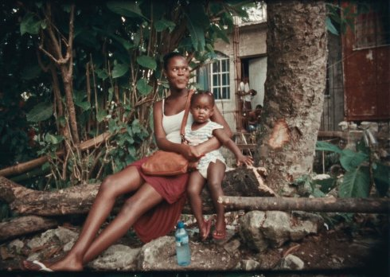

Black mother

Khalik Allah
|
75 min – HD – Englisch K+S: Khalik Allah – T+M: 4th Disciple, Josh Furey, Khalik Allah – P: Khalik Allah, Leah Giblin – V: Khalik Allah www.khalikallah.com
|
samstag 13 okt 22.30 werkstattkino
Den täglichen Überlebenskampf von Menschen auf der tropischen
Insel Jamaika, seiner Heimat, portraitiert Khalik Allah entlang
von Prostituierten, Obdachlosen, Entstellten. Die allgegenwärtige
Armut, aber auch die überbordende Vitalität und tiefe
Spiritualität feiert er in einem audiovisuellen Gedicht, das in
harten Kontrasten, in Blicken, Gesten und im Klang des
allgegenwärtigen „Patois“ unvorhergesehene Momente von Schönheit
freisetzt.
BLACK MOTHER meidet die Klischeefallen über Ausgrenzung und Armut.
Dabei kommt der polyphonen Tonspur, die aus den Stimmen der Straße
eine rhythmische Collage von hoher Musikalität komponiert,
entscheidende Bedeutung zu. (DokuArts)
Khalik Allah Autodidaktischer Filmemacher und Fotograf. Khaliks erstes Buch mit Fotografien, „Souls Against the Concrete”, wurde 2017 von University of Texas Press veröffentlicht. Sein Auge für gewagte Porträtfotografie und kühne Ästhetik haben ihn als einen neuen Visionären ausgezeichnet. Black Mother ist sein erster Langfilm. |
| Filme Black Mother 2018 |